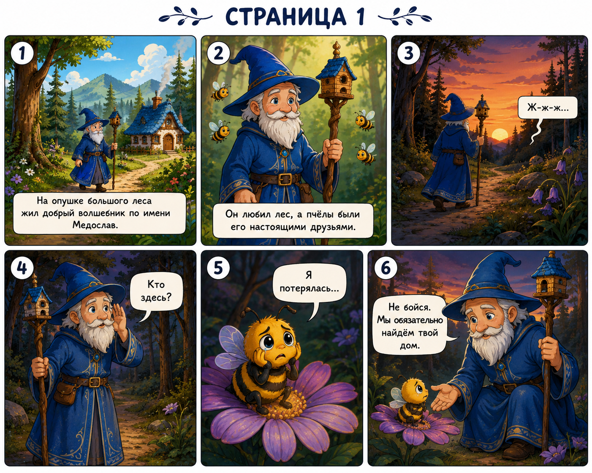
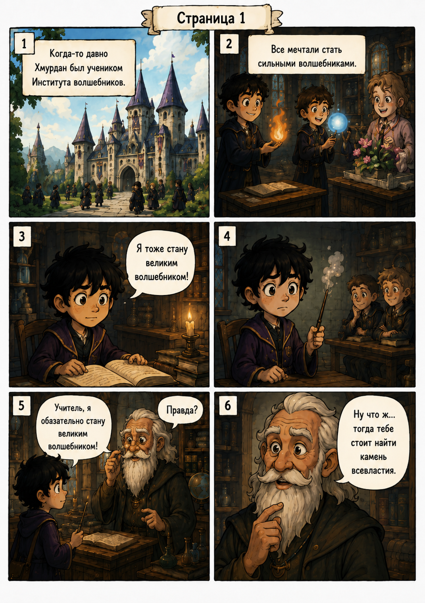
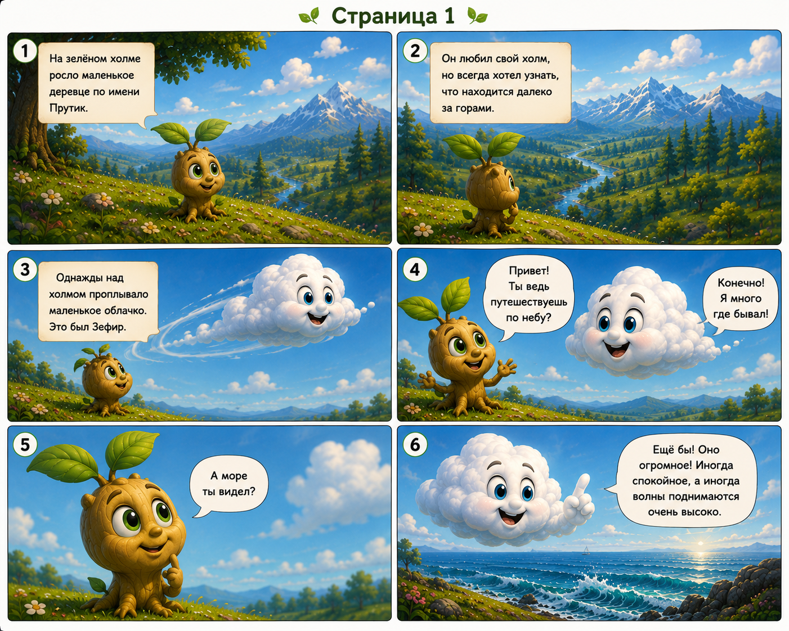
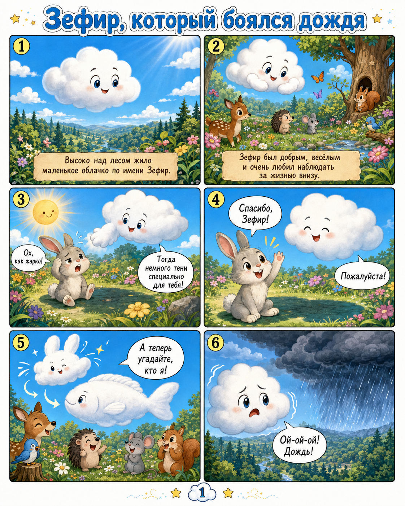
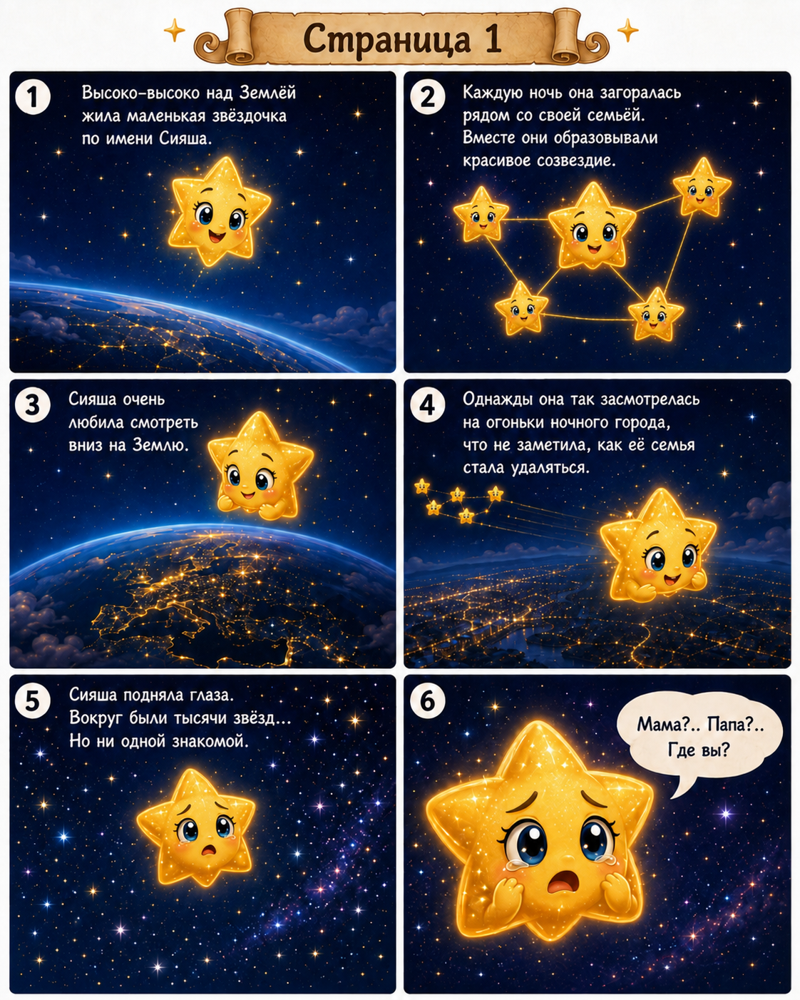

Добрые истории Медослава и его друзей.

Помоги Медославу вернуть маленькую пчёлку домой.
📖 Читать
История о том, как Хмурдан понял, что настоящая сила — в добрых делах.
📖 Читать
История о Прутике и его большой мечте однажды увидеть настоящее море.
📖 Читать
История о маленьком облачке, которое боялось дождя и однажды поняло, что дождь тоже может приносить добро.
📖 Читать
История о маленькой звёздочке, которая помогает другим найти дорогу домой.
📖 Читать